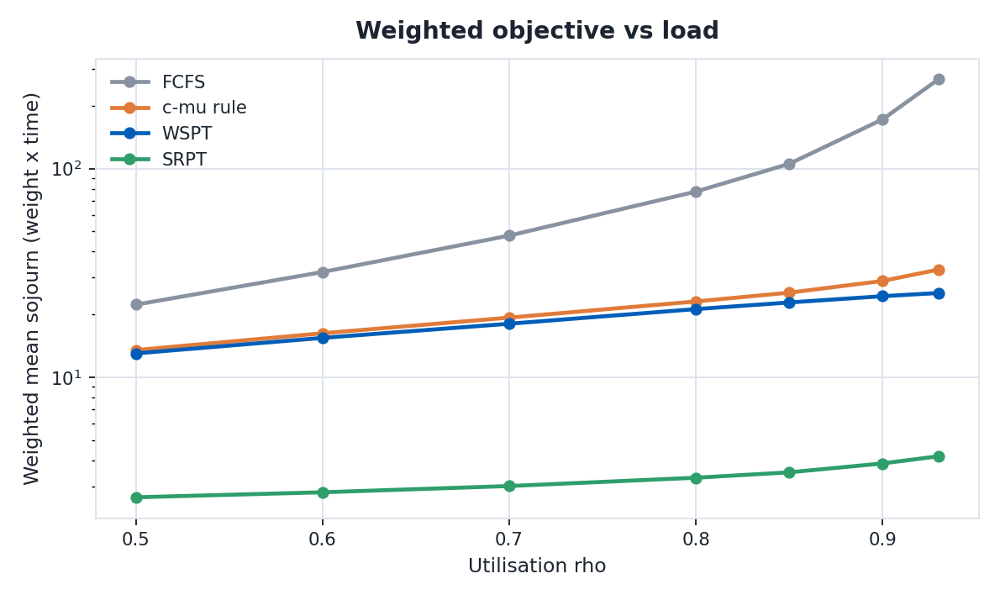
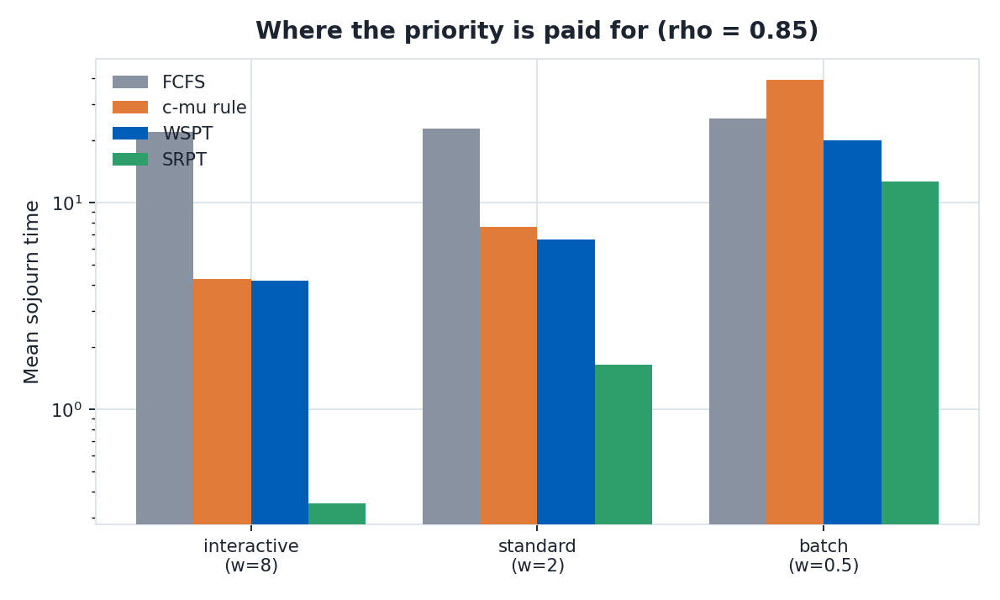
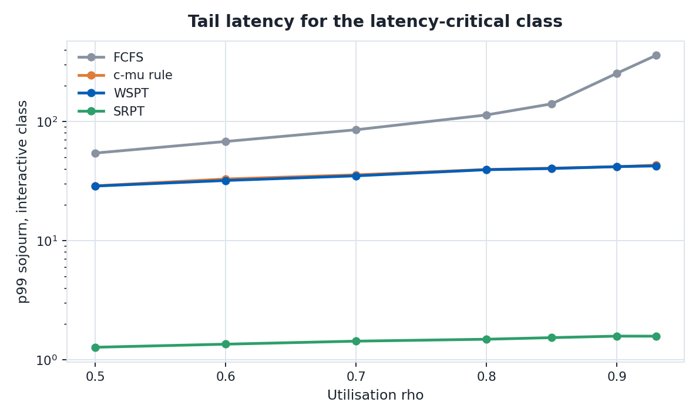
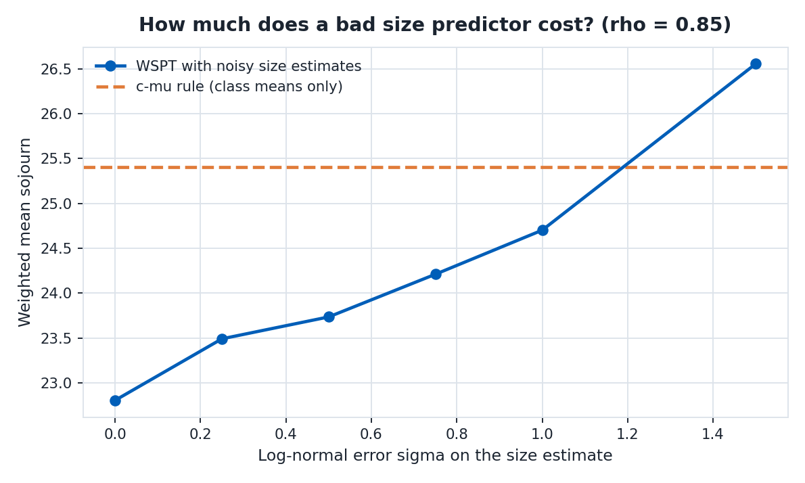
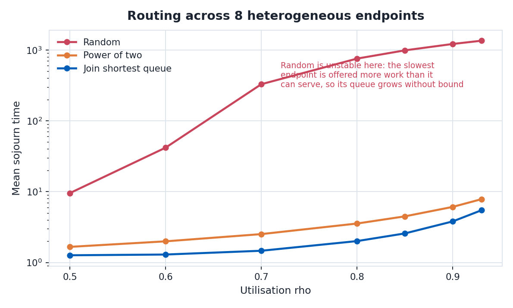

WSPT, the c-mu Rule, and What Actually Helps an LLM Router-Scheduler
About:
- At Microsoft Research India I co-designed a distributed router-scheduler for cloud GPU and LLM clusters, using an integer program with queuing-theoretic constraints and ARIMA demand forecasting. It was pushed to production and gave a 6% improvement over the existing baseline with near-optimal SLA compliance under variable load.
- That production system is internal, so I am not publishing its code or its per-class numbers. What this post does instead is take the scheduling theory underneath it and test it honestly, in a simulator written for this post.
- Every number and figure below comes from that simulator: router_scheduler_sim.py, router_scheduler_plots.py, raw output in router_scheduler_results.json. About 200 lines, runs in a couple of minutes.
- The 6% is not reproduced here, and this simulator is not a model of the production system. The two are kept separate deliberately: one is a recorded production result, the other is a clean experiment about why policies of that shape work at all.
1. The problem
A router-scheduler for LLM serving answers two questions on two timescales. On the slow timescale, minutes to hours, it decides how much capacity to place where: how many GPUs of which SKU, in which region, for which model. On the fast timescale, milliseconds, it decides which request to serve next and on which endpoint. The slow loop is a forecasting and provisioning problem and is naturally an integer program. The fast loop is a queuing problem, and that is this post.
Set it up as a multiclass queue. Requests arrive of class $k$, each class carrying a holding cost (or weight) $w_k$ encoding how much you care about latency for that class, and a service time distribution with mean $1/\mu_k$. Interactive chat is expensive to delay; an overnight batch summarisation is not. Writing $C_j$ for the completion time of request $j$, the objective almost every practical system is really optimising is
$$\min \sum_j w_j C_j$$
which in steady state becomes the long-run average holding cost $\sum_k w_k \mathbb{E}[L_k]$, with $L_k$ the number of class $k$ requests in the system. Little's law, $\mathbb{E}[L_k] = \lambda_k \mathbb{E}[T_k]$, says minimising holding cost and minimising weighted mean sojourn time are the same problem.
2. WSPT, and why it is optimal
Weighted Shortest Processing Time schedules in decreasing order of the ratio $w_j / p_j$, where $p_j$ is the processing time. For the deterministic single-machine problem $1 \,||\, \sum w_j C_j$ with all jobs available at time zero, WSPT is exactly optimal. This is Smith's rule, from 1956, and the proof is a two-line interchange argument worth seeing, because it tells you precisely what the rule trades off.
Interchange argument. Take any schedule in which job $b$ runs immediately after job $a$, and suppose they are in the wrong order, that is $w_a/p_a < w_b/p_b$. Let $t$ be the time the pair starts. In the current order the pair contributes
$$w_a(t + p_a) + w_b(t + p_a + p_b)$$
and after swapping,
$$w_b(t + p_b) + w_a(t + p_b + p_a).$$
Subtracting, the swap changes the objective by $w_a p_b - w_b p_a$. Dividing by $p_a p_b > 0$, this is negative exactly when $w_a/p_a < w_b/p_b$. So whenever a pair is out of WSPT order, swapping strictly improves the objective, and no optimal schedule can contain such a pair. The ordering is total, so WSPT is the unique optimum up to ties.
Notice what the argument does not need: no arrival process, no distributional assumption, no convexity. It needs only that $w/p$ is known. That is the entire catch, and section 5 is about the fact that in LLM serving it is not.
3. The c-mu rule
The c-mu rule is the stochastic counterpart. At each decision point, serve a request from the non-empty class maximising $c_k \mu_k$, holding cost times service rate. Cox and Smith showed this minimises long-run average holding cost for a multiclass M/G/1 queue. Since $\mu_k = 1/\mathbb{E}[p_k]$, the index $c_k \mu_k = w_k / \mathbb{E}[p_k]$ is WSPT applied to class means rather than individual jobs. Same idea, two granularities, and the difference matters more than it looks.
The deeper reason c-mu is optimal is a conservation law. For a work-conserving M/G/1 queue the workload in the system is the same under every non-idling policy: scheduling cannot create or destroy work, only decide who waits. Formally the achievable region of $(\mathbb{E}[L_1], \ldots, \mathbb{E}[L_K])$ is a polymatroid, and minimising a linear objective over a polymatroid is solved by a greedy index rule. c-mu is that greedy rule. This also names the price: you are not making the system faster, you are choosing who absorbs the delay. Figure 2 is that sentence as a bar chart.
For non-preemptive priorities, with classes ordered by priority and $\rho_k = \lambda_k / \mu_k$,
$$\mathbb{E}[W_k] = \frac{\sum_{j} \lambda_j \mathbb{E}[p_j^2] / 2} {\left(1 - \sum_{j < k}\rho_j\right)\left(1 - \sum_{j \le k}\rho_j\right)}$$
Both denominators shrink as load rises, so delay for low-priority classes grows roughly like $1/(1-\rho)^2$. Priority decisions matter far more at high utilisation than at low, which is why the curves in figure 1 fan out to the right instead of running parallel.
Where c-mu stops being optimal, which is most of the interesting cases: with convex holding costs it generalises to the generalised c-mu rule, optimal only asymptotically in heavy traffic; with abandonment the index becomes $c\mu/\theta$; with hard deadlines it is not optimal at all; and with multiple heterogeneous servers it stops being an index problem, because you must also decide where, not only who. Every one of those is live in LLM serving.
4. The other policies worth knowing
- FCFS: the work-conserving reference. Fair, trivial to implement, no starvation, and it discards every bit of information you have about weights and sizes.
- SRPT: preemptively serve the shortest remaining processing time. Optimal for mean flow time, famously strong, but it needs exact remaining sizes and starves long jobs.
- Processor sharing and round robin: what continuous batching gives you by default. Fair, needs no size information, and mean response time is insensitive to the service distribution beyond its mean, which is a real robustness property.
- JSQ and power of two choices: for the routing half. Sampling two endpoints and taking the shorter queue buys a doubly exponential improvement in maximum queue length over random, at a fraction of JSQ's coordination cost. Figure 5.
5. Why LLM serving breaks the assumptions
WSPT needs $p_j$. In LLM inference the service time is dominated by output token count, which is not known until the request finishes. You can predict it, and people do, but then WSPT is only as good as the predictor. That is measurable, and figure 4 measures it.
Four more things break:
- Prefill and decode differ. Prefill is compute bound and roughly quadratic in prompt length; decode is memory bandwidth bound and linear in output length. A single scalar $p_j$ is already a simplification.
- Continuous batching makes $\mu$ endogenous. Service rate depends on what else is in the batch, so $\mu_k$ is not a constant of the class but a function of the scheduling decision. The clean c-mu argument assumes it is not.
- The KV cache is a knapsack constraint. Admission is limited by memory as well as compute, adding a packing problem that queuing theory does not see.
- Demand is strongly non-stationary. Enterprise traffic is diurnal and regional. A policy tuned for the mean is tuned for a load level that is rarely the current one.
Those five facts are the argument for the architecture: a slow loop that forecasts demand (ARIMA is a reasonable choice for strongly seasonal, mostly linear traffic, and it is cheap to refit) and solves an integer program for placement, feeding a fast loop that applies an index policy to whatever capacity the slow loop provisioned. The slow loop absorbs non-stationarity and heterogeneity, which index rules handle badly. The fast loop handles instantaneous priority, which integer programs handle far too slowly.
6. The experiment
Three classes chosen to resemble real serving traffic: interactive ($w = 8$, mean service 0.30), standard ($w = 2$, mean 1.00), batch ($w = 0.5$, mean 4.00), arriving 50 / 35 / 15. Service times are lognormal rather than exponential, because output-length distributions have a long right tail and that tail is exactly what stresses a scheduler. 120,000 requests per configuration, first 20,000 discarded as warmup.

Figure 1. The weighted objective against load. At $\rho = 0.85$ the c-mu rule cuts it from 105.2 to 25.4, a 76% reduction, and job-level WSPT reaches 22.8, a 78% reduction. The gap widens with load, as the $1/(1-\rho)^2$ term predicts. SRPT sits far below everything else, but see section 7.

Figure 2. The conservation law made visible. FCFS gives every class roughly the same sojourn time (21.9 interactive, 25.5 batch). The c-mu rule takes interactive down to 4.28 and pays for it by pushing batch to 39.3, worse than batch got under FCFS. Nothing was created. Work was moved. This is the most important plot on the page, because it says a scheduling win is always a redistribution, and you had better agree with the direction of the transfer.
Note also that WSPT holds interactive at 4.17, essentially matching c-mu, while leaving batch at 20.0 rather than 39.3. Job-level sizing lets a short batch job overtake a long one; class-level c-mu cannot see the difference. That is the practical argument for building a size predictor.

Figure 3. The p99 of the latency-critical class, which is what an SLA is actually written against. At $\rho = 0.85$ FCFS puts interactive p99 at 140.3 while c-mu holds it at 40.5. Means understate the benefit: priority helps the tail more than the average, because the tail is dominated by the times a short request queued behind a long one, which is exactly the event an index rule prevents.

Figure 4. The plot that decides whether to build a predictor at all. WSPT is given size estimates corrupted by lognormal multiplicative noise of scale $\sigma$. With perfect estimates it scores 22.8. At $\sigma = 1.0$, a genuinely bad predictor, it degrades only to 24.7, and even at $\sigma = 1.5$ it is 26.6, still better than the c-mu baseline. WSPT degrades gracefully. The reason is in the interchange argument: the cost of a mis-ordered pair is $w_a p_b - w_b p_a$, which goes to zero as the pair becomes closer in ratio. Errors that reorder nearly equivalent jobs cost nearly nothing; only errors large enough to invert genuinely different jobs are expensive. You do not need a good predictor, you need one that is right about the big gaps.

Figure 5. The routing half, across eight endpoints with speeds from 0.6 to 1.4. Random dispatch is not merely worse, it is unstable: it offers every endpoint an equal share, which is more work than the slowest can serve, so that queue grows without bound and the plotted value is an artefact of a finite run rather than a steady state. Join-shortest-queue gives 2.57 and sampling just two endpoints gives 4.48, most of the benefit for a fraction of the coordination. Heterogeneity is why a production router cannot be stateless.
7. Reading the results honestly
SRPT wins this benchmark and you should still be suspicious of it. It looks dominant in figures 1 and 2 partly because of how I set the problem up: here the high-weight class is also the short class, so shortest-first and highest-weight-first agree. Decouple them, make the expensive class the long one, and SRPT stops looking clever. It also assumes exact remaining sizes, precisely what LLM serving does not give you, and it starves long jobs in a way that surfaces as a support ticket rather than in this plot.
The c-mu rule is the one I would deploy first. It needs only per-class mean service rates, estimable from a day of logs; it has no per-request predictor to train, serve, or monitor for drift; and figure 2 shows it captures most of the available gain. WSPT is the upgrade you buy afterwards, and figure 4 says that upgrade is robust enough to be worth buying.
What this does not show. A single-server multiclass simulation with an exogenous service distribution. It does not model continuous batching, KV-cache pressure, prefill and decode asymmetry, or the slow provisioning loop. Each would change the numbers. It is a study of the policy question in isolation, which is all it claims to be.
8. What the theory says about the production design
- Because of the conservation law, no fast-loop policy reduces total work. If you need headroom rather than a different distribution of pain, the only lever is the slow loop: provision more, or provision it in the right place. That is what makes the integer program load-bearing and the index rule cheap.
- Because delay scales like $1/(1-\rho)$ and priority effects like $1/(1-\rho)^2$, a small reduction in effective utilisation buys a disproportionate latency improvement. Forecasting well enough to keep $\rho$ off the knee is worth more than any cleverness at $\rho$ close to one.
- Because index rules assume a single homogeneous server, and real fleets are heterogeneous and regional, placement genuinely has to be solved as an optimisation problem rather than approximated by a rule of thumb.
Which is the honest summary of the design: forecast demand, solve for placement on the slow loop, let a cheap index policy run the fast loop. The 6% recorded in production is a systems result from that whole pipeline. The figures here are a separate, reproducible argument for why the fast loop is shaped the way it is.
[1] Smith, W. E. (1956). Various optimizers for single-stage production. Naval Research Logistics Quarterly 3(1), 59 to 66. The WSPT interchange argument.
[2] Cox, D. R. and Smith, W. L. (1961). Queues. Methuen. The c-mu rule.
[3] Federgruen, A. and Groenevelt, H. (1988). Characterization and optimization of achievable performance in general queueing systems. Operations Research 36(5). The polymatroid and conservation-law view.
[4] Van Mieghem, J. A. (1995). Dynamic scheduling with convex delay costs: the generalized c-mu rule. Annals of Applied Probability 5(3).
[5] Atar, R., Giat, C. and Shimkin, N. (2010). The c-mu/theta rule for many-server queues with abandonment. Operations Research 58(5).
[6] Mitzenmacher, M. (2001). The power of two choices in randomized load balancing. IEEE TPDS 12(10).
[7] Bansal, N. and Harchol-Balter, M. (2001). Analysis of SRPT scheduling: investigating unfairness. SIGMETRICS.
[8] Patel, P. et al. (2024). Splitwise: efficient generative LLM inference using phase splitting. ISCA 2024. Prefill and decode separation.
[9] Jaiswal, S., Jain, K., Simmhan, Y., Parayil, A., Mallick, A., Wang, R., St. Amant, R., Bansal, C., Ruhle, V., Kulkarni, A., Kofsky, S. and Rajmohan, S. (2025). SageServe: optimizing LLM serving on cloud data centers with forecast aware auto-scaling. POMACS / SIGMETRICS 2025, arXiv:2502.14617. Related published work from Microsoft Research India on the forecast plus integer program structure. I am not an author on this paper; it is cited as public background for readers who want a worked example of the slow loop.